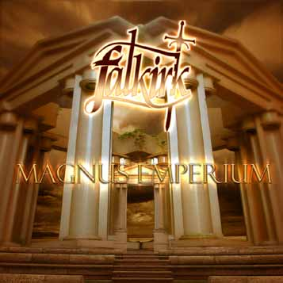

- MAGNUS IMPERIUM DEMO - 
2001
- line-up -
Arnaud Bodin - guitar
Alexandre Bonvalot - guitar
Stéphane Fradet - vocals
Igor Zamolodtchikov- bass
Laurent Robalo - drums
Drums tracks recorded by Dider Théry at Terrific Studios, Ivry/Seine, FRANCE.
Other tracks recorded by Stéphane Fradet between september & november 2001.
Mixed & mastered by Stéphane Fradet in December 2001.Made with the "Stormmaker Studios".
only for promotional use
not for sale